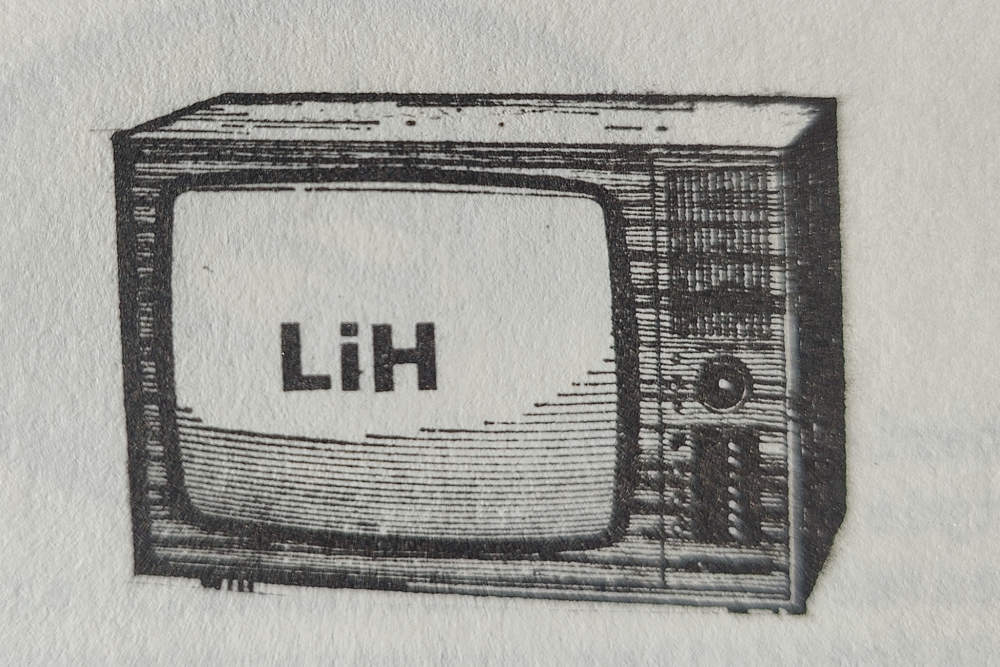
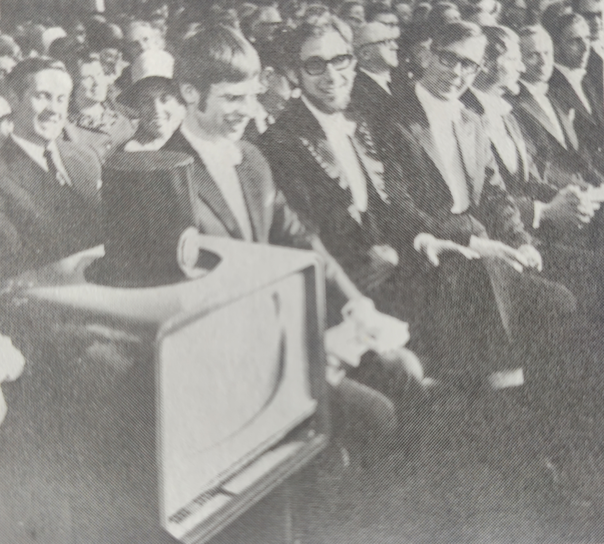
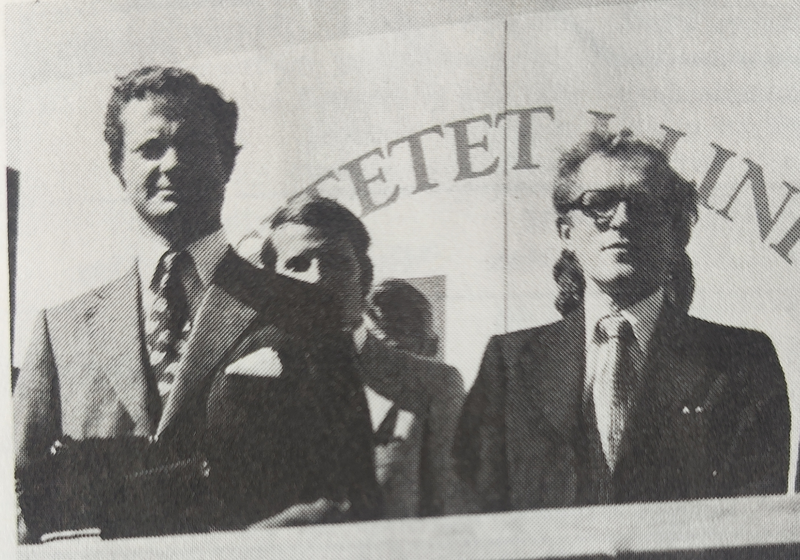
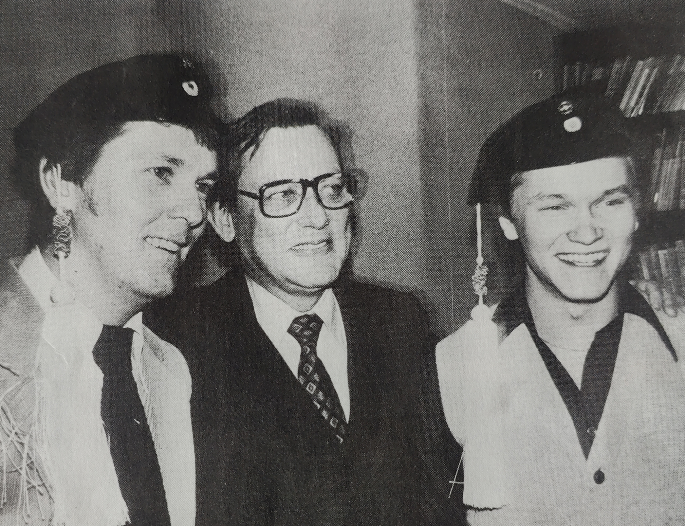

Jag ber om ursäkt för den tillfälliga oordningen. Denna sida är för närvarande under utveckling och kommer att bli en del av ett historieprojekt om Linköpings Universitet. Projektet leds av mig, Tyson Horvath, civilingenjörsstudent inom mjukvaruteknik vid LiTH. Om du har synpunkter eller önskar bidra till projektet, är du varmt välkommen att kontakta mig på isak.horvath@d-sektionen.se. Alla typer av material som på något sätt relaterar till universitetets historia, dess föreningar eller utbildningar är mycket uppskattade.
Tack för ditt bidrag!
//Tyson
År 1963 startades Tekniska Magisterutbildningar (TM) i Linköping, i regi av KTH, som en del av en filialverksamhet. I december 1965 fattade riksdagen ett principbeslut om att förlägga en teknisk och medicinsk högskola samt en universitetsfilial till Linköping.
I februari 1967 tillsatte regeringen en särskild kommitté för TV och radio i utbildningen (TRU), med uppdraget att planera och producera TV-program för undervisningen vid Linköpings högskola. Samma år startas en filial till Stockholms universitet upp.
För Linköpings kommun utgjorde de nya behovet av bostäder en särskild utmaning. Bostäder i kvarteret Flamman stod klara 1965, följt av Ryds Allé 1967.

Vid en presskonferens på Linköpings slott dagen före invigningen av filialen den 1 september 1967 presenterade arkitekt Bengt Hidemark planerna för byggnationen i Valla.
Linköpings högskola invigs i biografen Forum i Folkets Hus. Vid invigningen består högskolan av en teknisk och en medicinsk enhet samt en universitetsfilial, som våren 1970 omvandlas till den filosofiska fakulteten inom Linköpings högskola (LiH). Omfattande försöksverksamhet med TV i undervisningen inleds. Samma höst startar Y-linjen (teknisk fysik och elektroteknik) med 80 platser, medan M-linjen (maskinteknik) och I-linjen (då kallad ekonomiingenjörsutbildning) har 50 platser vardera. Teknisk magisterutbildning erbjuder 40 platser. Under läsåret 1969/70 finns det inga byggnader på Valla, och undervisningen sker i lokaler på Sveagatan, Platensgatan och ett flertal andra ställen. Byggnadsarbeten försiggår emellertid på Valla-området för det permanenta lokalerna och en första etapp står färdigt till höstterminens start 1970. Verksamheten startar 1969 med 180 studerande i civilingenjörsutbildning.
De pågående byggnadsarbetena avser byggnaderna i kvarter 1, 2 och 4. Byggnaderna i kvarter 1 och 2 är vid full utbyggnad avsedda för teknisk-naturvetenskapliga institutioner och består av laborationsdelar i en våning och kontorsdelar i två våningar. Bland annat blir alla väggar, el-, vatten- och avloppsledningar flyttbara. Vid full utbyggnad finns följande enheter i kvarter 1: inst. för konstruktions- och produktionsteknik, inst. för industriell ekonomi och organisation, ritsalar, mekanisk centralverkstad, fastighetstjänst, telefonväxel, nationalekonomi (fil.fak.) och företagsekonomi (fil.fak.).
Hösten 1970 stod A-huset klar för användning, vilket möjliggjorde starten av den nydanande TV-undervisningen. Trots detta lämnade tentamensresultaten i slutet av terminen en hel del övrigt att önska, vilket inledde en intensiv debatt om undervisningsmetoden som skulle fortsätta under en längre tid och involvera studenter, personal och massmedia. Samtidigt präglades situationen av låga intagningspoäng och en bristande förkunskapsnivå bland de nya studenterna. Villan på Drottninggatan hade sedan hösten 1967 fungerat som hemvist för studentkårernas verksamhet, men år 1973 flyttade de till hus A, medan Ryds herrgård blev kårhus för studenterna redan 1968. Under 1970-talet var även hus B och C färdigställda, och området började kallas Campus Valla. Inomhustemperaturerna kunde ibland överstiga 40 grader, vilket ledde till återkommande brandlarm, delvis på grund av de välisolerade fönstren som inte gick att öppna. De platta taken orsakade dessutom problem under snöfall, vilket resulterade i att stora mängder snöskyfflar köptes in för att hantera situationen.
1971 sker den första professorsinstallationen vid Linköpings Högskola där åtta professorer samt en TV installeras. Samma år blir antagningskapaciteten i årskurs 1 vid LiTH fullt utbyggd och 610 studerande antas.
I september 1973 föreslår teknologkåren att den tekniska fakulteten officiellt ska benämnas Linköpings Tekniska Högskola. Den främsta anledningen är att presumtiva studenter annars tvivlar på att utbildningen håller samma standard som vid de etablerade tekniska högskolorna. Förslaget får stöd från den tekniska fakulteten, och i december skickas det vidare till universitetskanslersämbetet med rektors godkännande.
Under tidigt 70-tal minskade intresset för de tekniska utbildningarna, vilket ledde till att man under hela decenniet arbetade på olika sätt för att vända utvecklingen i en positiv riktning. Dessa insatser resulterade i att LiTH stod på en säkrare grund under 1980-talet.
Hösten 1975 startar D-linjen (datorteknik). En av anledningarna till dess införande är de rekryteringsproblem som tidigare upplevts, särskilt till Y- och M-linjen, med ett bottenrekord 1972 då endast 300 sökande konkurrerade om 610 platser totalt vid LiH. Den nya D-linjen inleds med 30 platser och har två sökande per plats.
I januari 1976 klargör den tekniska fakulteten att LiTH är ett samlingsbegrepp för både den tekniska fakulteten och dess utbildningsnämnd.
På våren 1970 utsågs professor Hans Meijer till rektor för högskolan, medan Stig Hagström blev prorektor.
Linköpings högskola grundades 1970 och tilldelades universitetsstatus 1975.
Fakulteten för läkarutbildning bildades den 1 juli 1970.
Libris startades vid LiH runt årsskiftet 1971/72 med medverkan av Kungliga biblioteket, Datasaab och LM Ericsson.
År 1972 grundades kören Lihkören, som numera kallas Linköpings Studentsångare.
I september 1973 lanserade teknologkåren namnet LiTH.
Från och med 1973 blir Draget en årligen återkommande dramatik.
Den första studentorkesterfestivalen (SOF) äger rum i maj 1973 och anordnas av teknologkåren och RiksMASK. Samma år sker den första doktorspromotionen vid Linköpings Högskola. Profilutredningen påbörjar även sitt arbete, utredningen föreslår senare bland annat en datateknisk utbildningslinje.
Högskolans restaurang låg i hus A fram till 1975, då Vallfarten invigdes.
1974 startar verksamhet med fortbildnings- och vidareutbildningskurser. En professur i informationsbehandling, särskillt datalogi, inrättas. Detta är den första professuren utöver den ursprungliga uppsättningen på 25 professurer.
Under 1975 uttalar sig utbildningsminister Bertil Zackarisson om att högskolan skall få universitetsstatus och därmed byta namn till Linköpings universitet. Namnbytet äger rum i maj och invigningen sker med kunglig medverkan. 1975 får LiTH sin första stipendiefond: tekn dr Erik Johnssons fond och regeringen beslutar att inrätta en utbildningslinje för datateknik.
År 1976 blev Sven Erlander dekanus för den tekniska fakulteten, och 1981 avgick han för att senare komma tillbaka för att bli rektor.
1976 besöker 17 kvinnliga civilingenjörer utexaminerade från LiTH högskolan i samband med studentorkesterfestivalen och Maskin-civilingenjör Ulf Simmons tilldelas ASEA:s Wallenbersstipendium.
1977 träder den nya högskolereformen i kraft och LiTH ställer ut på Tekniska mässan i Stockholm.
1978 inrättas Institutionen för produktionsekonomi samt institutionen för yrkesmedicin och industriell ergonomi. Samma år spikar M-civilingenjören Matz Lenner sin doktorsavhandling, som blir avhandling nr 100 vid Linköpings Universitet.
År 1979 har tio år gått sedan utbildningen vid LiTH startade och LiTH utexaminerar sin 1000:e civilingenjör.
1979 finns det 410 anställda varav 27 är professorer, 2 adjungerade professorer, 62 universitetslektorer, 10 forskarassistenter, 20 övriga lärare och 195 assistenter. Man har 60 miljoner kronor i årsbudget varav 10 miljoner kronoer i externa medel. Det finns 8 institutioner och 2100 studerande i civilingenjörsutbildningarna, 300 studerande i enstaka kurser, 800 deltagare i uppdragsutbildning och 340 forskarstuderande. Det finns 4 utbildningslinjer med totalt 14 studieinriktningar, 250 kurser i civilingejörsutbildning och 40 kurser/år i uppdragsutbildning, 10 fristående enstaka kurser och 30 ämnen i forskarutbildning. Totalt har 37 personer doktorsexamina, 1 teknologie licentiatexamen och 1000 civilingenjörsexamina vid LiTH.
Tema startade verksamheten 1979/80.
I början av 1980-talet fick LiU ansvaret för utvecklingen av UHÄs studiedokumentationsprojekt (LADOK).
Institutionerna för samhällsvetenskap (SVI) och språk och litteratur (SoL), tillsammans med universitetsbibliotekets centrala funktioner och det humanistiska-samhällsvetenskapliga kvartersbiblioteket, flyttade in under sommaren 1980.
År 1982 grundades datorföreningen Ctrl-C av studenter på M-linjen för att administrera teknologernas användning av skolans datorer.
År 1973 grundades datorföreningen Lysator av studenter på Y-linjen för att ta emot en dator från Datasaab.
Hösten 1982 startar C-linjen (datavetenskap).
År 1983 bildades Institutionen för datavetenskap (IDA) som en självständig institution.
Det treåriga programmet för statistiker inrättades 1985, följt av det affärsjuridiska magisterprogrammet som startade 1994.
Under höstterminen 1986 antogs den första kullen till den fullständiga läkarutbildningen.
Inflyttningen i hus T skedde 1987, följt av hus I 1990 och Origo 1993. År 2000 tillkom ett nytt hus vid namn Key. År 2009 blev Malmstensskolan på Lidingö en del av LiU.
I juni 1987 invigs Kårallen, studentkårens hus.
Hösten 1995 startade IT-linjen (informationsteknik), och den mest spännande nyheten var att problembaserad inlärning (PBI) introducerades.
Den 9 mars tar Linköpings högskolas första civilingenjör, Thomas Nielsen, examen från I-linjen. Samma månad beslutade riksdagen, efter en proposition, att TV-undervisning inte längre skulle vara obligatorisk för LiH. Från och med nu skulle högskolan själv få bestämma hur mycket och på vilket sätt man vill använda TV-undervisning.
År 2012 slogs C-sektionen (bestående av IP och C) ihop med D-sektionen (datateknologsektionen).
Hösten 2013 påbörjar den första kullen U-studenter, den nya civilingenjörsutbildningen i mjukvaruteknik.
Den 19 maj 2015 anordnar LiU en jubileumskonferens för att fira D-programmets 40-årsjubileum. Några månader senare avlider Tord Jöran Hallberg, en av de som var med och införde Sveriges första civilingenjörsutbildning i datateknik.
I augusti 2017 rivs huset Origo för att ge plats åt den nya byggnaden Studenthuset, som omfattar sju våningar.
Den 21 augusti blir Simon Lindblad den första U-studenten att ta examen.
Det nya studenthuset på Campus Valla invigs den 30 augusti 2019.
Information och bilder på denna sida kommer i huvudsak från Lysators "Historieprojektet" på lysator.se, samt boken "LiU Ungt universitet på väg" och tidsskriften "LiH Meddelar". Jag besitter inte ägandeskap av något material och vill du att jag tar ned något är det bara att höra av sig!